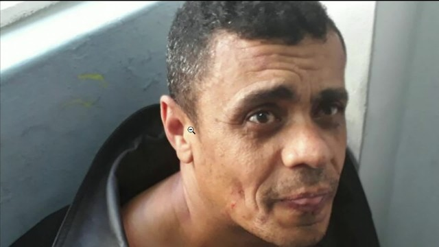
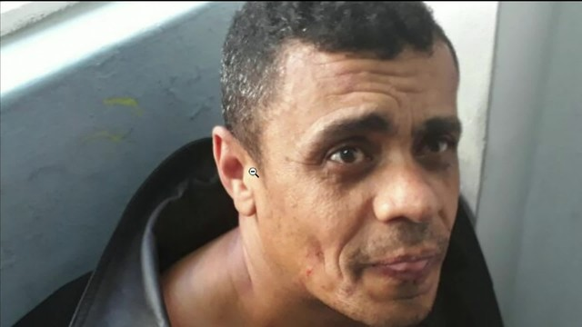

|
 |
Notícias do dia Brasil 2.0TSI |
|
 |
Candidato era carregado nos ombros por apoiadores quando homem se aproximou e o feriu na barriga.
Bolsonaro foi levado para a Santa Casa da cidade, passou por uma cirurgia no intestino e ficará internado na UTI. Suspeito foi preso.
Foto do agressor foi divuldado, seu nome é Adélio Bispo de Oliviera
Caso queira saber mais sobre o agressor, segue link de seu Facebook Adélio Bispo